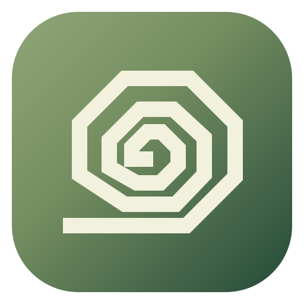

成简
轻松写，直接编辑
未命名.md
↶ 撤销
↷ 重做
新文档
▣ 浮窗
实时保存
打印
新建
打开文档
另存为
保存
Ctrl S
☷ 目录
一级标题
二级标题
三级标题
正文
B
I
S
• 项目符号
编号
▾
☑ 待办
❝
</>
突出
▾
▧ 格式刷
查找
替换
链接
＋ 图片
↗ 恢复窗口
▦ 表格
−
100%
＋
主题 ▾
表格编辑
＋ 行
＋ 列
删除行
删除列
表头
删除表格
点击单元格直接输入 · Tab 切换单元格
像写文档一样，自在记录。
直接编辑 · 本地保存
拖入图片，或用上方工具栏添加表格
图片宽度
−
px
＋
原始大小
放大查看 ↗
删除图片
主题方案
选择喜欢的主题，下次打开自动沿用。
＋ 自定义方案
完成
自定义主题
修改即时预览并自动保存，随时可以切换回来。
方案名称
主题色
按钮与选中效果
背景色
玻璃背后的底色
文档底色
书写页面的颜色
正文颜色
文档中的文字
背景与玻璃
背景类型
纯色
渐变色
上传图片
渐变终点
渐变角度
上传背景图片
图片缩放
背景透明度
背景模糊度
液态玻璃效果
玻璃透明度
玻璃模糊度
恢复默认
完成
清除突出
插入表格
创建后，点击单元格就能输入内容。
行数
列数
第一行作为表头
取消
插入表格
插入链接
网址
取消
应用
图片预览
−
100%
＋
适应窗口
1:1 原图
×
滚轮缩放 · 拖动平移 · Esc 关闭